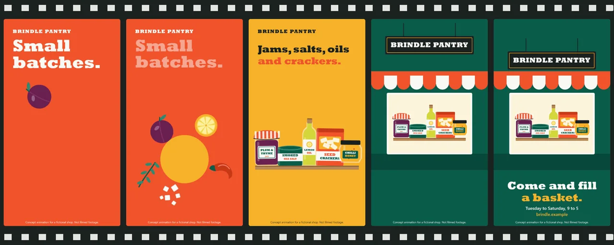
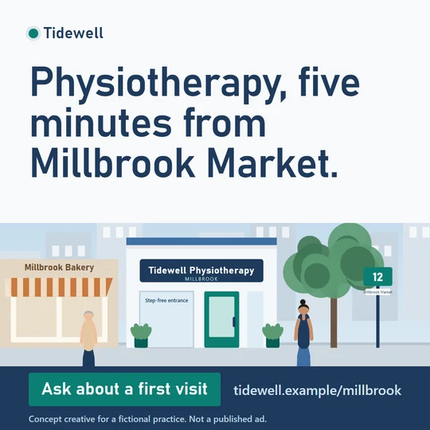

Motion prototype
Different pieces. One connected result.




Websites and maintenance
Fictional hotel concept
Casa Almina, website screen
Local visibility
Fictional practice concept
Tidewell, local-information section
Video and content
Fictional pantry campaign
Brindle Pantry, frames from the motion piece
Paid advertising
Fictional practice concept
Tidewell, square ad concept
- ApproachFour kinds of work, still apart.
- AssemblyPieces dock edge to edge.
- ResolutionOne connected result.
Joined, and still readable.
The mosaic above is the end state of the scroll. It stays on the page as a normal section: every label is live text and the audit button never moves.
Prototype for review. Pictures are concept work for fictional clients, not real projects or results.